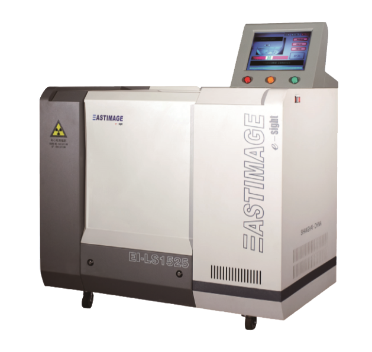

|  |
Main Features
CT technology apply in liquid check, attain the liquid
property via Computed tomography scan
Detect and differentiate water, milk, alcohol, gas, lacquer
thinner, sulphuric acid and the other normal liquid with their
dangerous levels of: Safe, Suspect and Danger
Video image and CT image of detected object for analysing
and tracing
Detect the liquid in glass, plastic, metal, ceramics and
the other normal packing materiel
High speed detecting, maximum 20sec per liquid object
Power on / running self-diagnostics function
Comply with liquid scanner requirements in DB11/646.6-2009
Wheel with lock, for easy moving and fixing
|